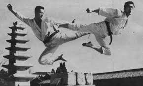
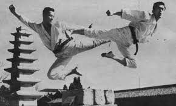
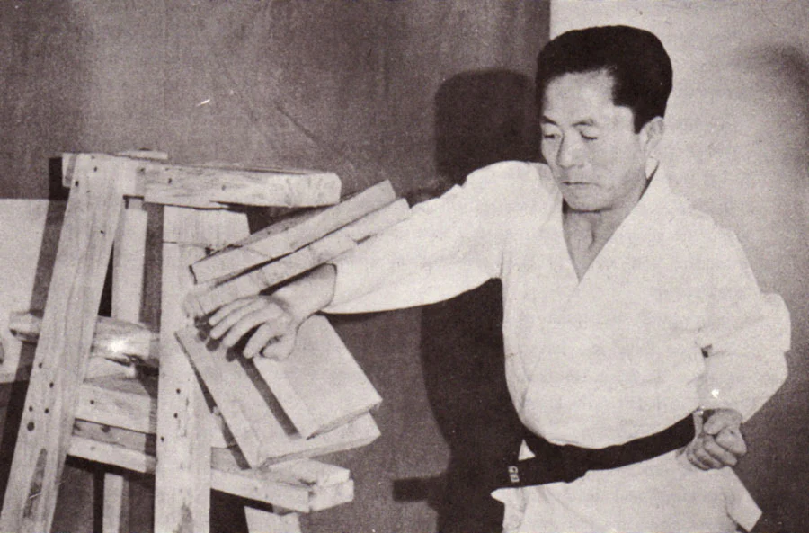
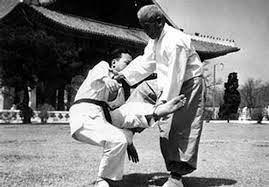
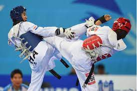

ORIGEN
Ubican los orígenes del taekwondo remontándose al año 50 d. C., a la práctica del arte marcial nativo llamado taekkyion arte aún practicado, que incluso ha sido declarado patrimonio inmaterial de la humanidad por las Naciones Unidas.
Ubican los orígenes del taekwondo remontándose al año 50 d. C., a la práctica del arte marcial nativo llamado taekkyion arte aún practicado, que incluso ha sido declarado patrimonio inmaterial de la humanidad por las Naciones Unidas.
El taekwondo fue registrado por primera vez ante el Estado coreano el 1 de abril de 1955 en Seúl por el general Choi Hong Hi, quien para su creación se basó en todo lo que aprendiera antes de su juventud como estudiante del taekkyon, antes de la ocupación japonesa de Corea (1910-1945), periodo donde el joven Choi fue protagonista de hechos que marcarían su vida y lo llevarían a impulsar la creación del taekwondo.
El taekwondo como arte marcial difundido por la ITF se caracteriza por su similitud con el Karate-Do japonés y el kung fu chino por el amplio uso de técnicas tanto de golpes con la mano abierta, el puño y con los pies, (incluyendo técnicas contra ataques armados) y por la inclusión de algunas técnicas de defensa personal cuerpo a cuerpo como lo son: los lanzamientos, las sumisiones, los ataque a puntos vitales, las luxaciones, barridos, escapes y contras, etc. El mismo tiene, a diferencia del taekwondo competitivo, muchas técnicas de brazo y variadas técnicas de pierna.
En el año 2009 vino la incursión de los petos electrónicos, para darle más certeza a las puntuaciones en la modalidad de combate a punto, aunque esto ha bajado la calidad y espectacularidad de los combates, la WT ha buscado volver a la técnica dinámica cambiando una vez más el reglamento de los combates. Ahora hay una división entre la nueva y la vieja escuela.
